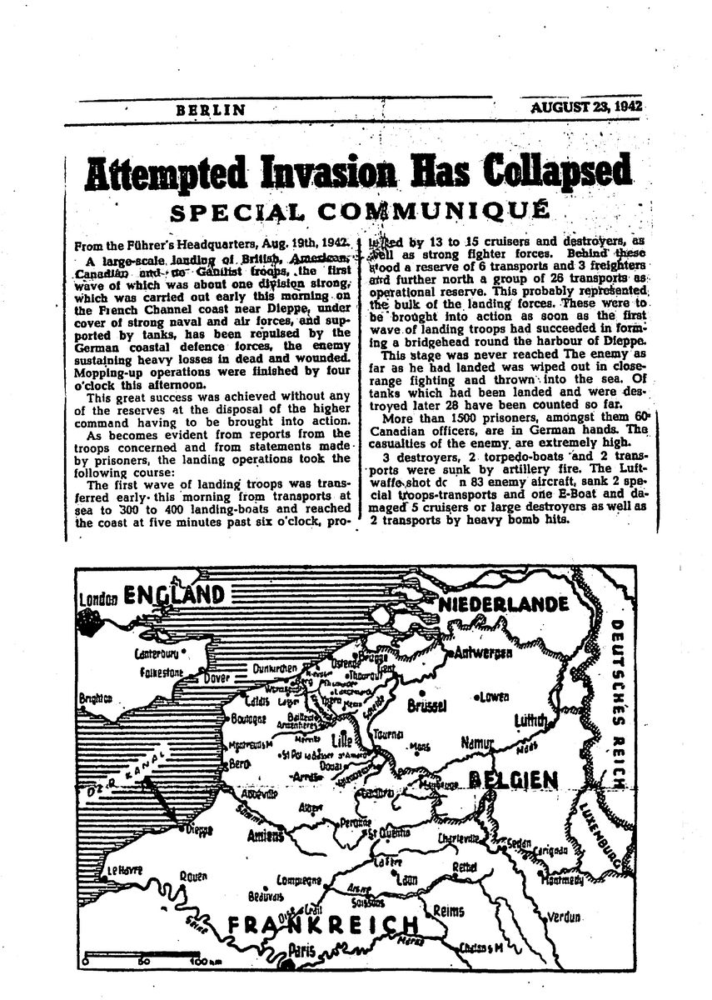
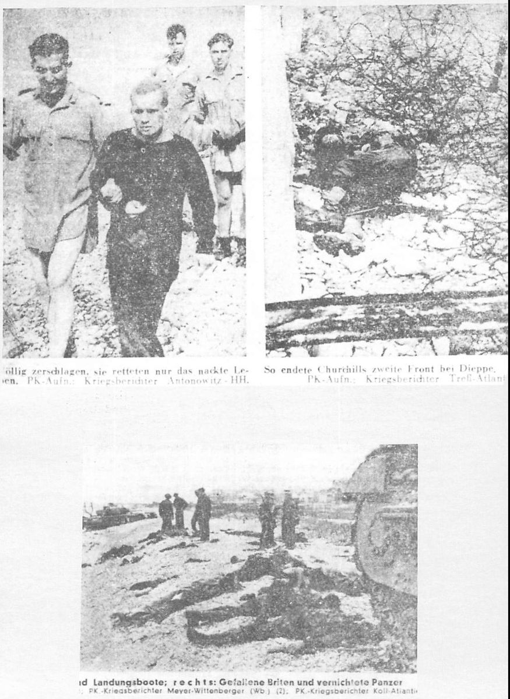
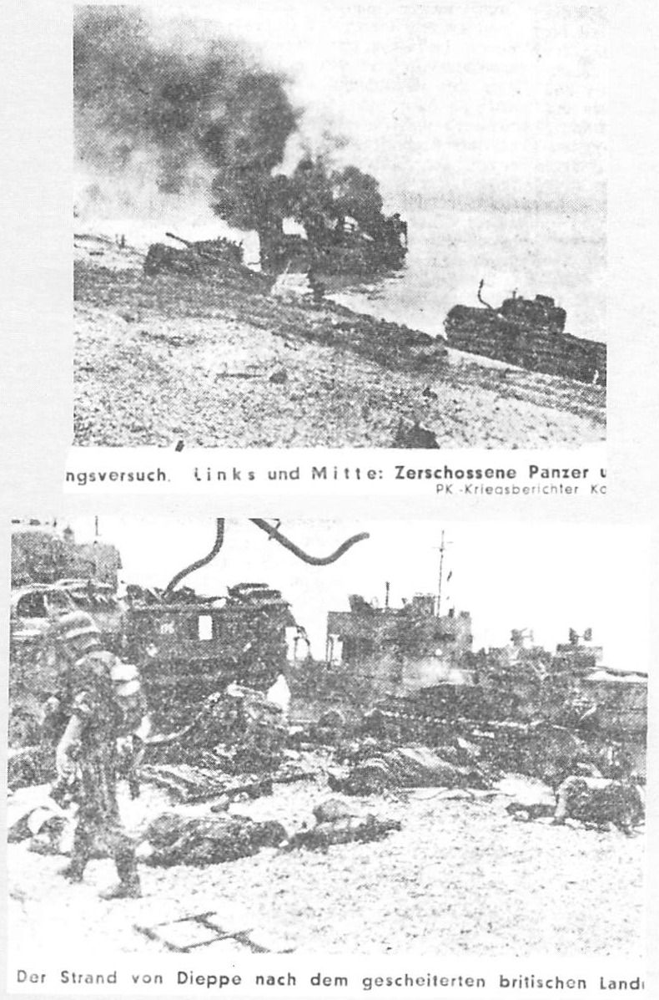
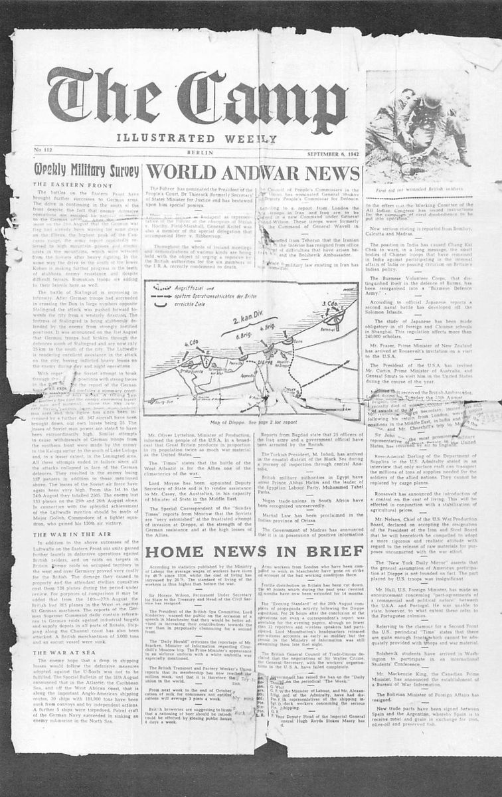

Chapter 1A Raid on Dieppe

After a brief and uneventful journey, we arrived in Portsmouth and immediately were loaded on tank landing craft. Notepaper was issued on which to write our last letters home and, shortly after, we received our Sten machine guns. The landing craft headed slowly out into the choppy waters of the Channel and only then were we advised of our mission - a raid on Dieppe.
There was a beautiful sunset as we sailed along the coast and my thoughts were a mixture of what tomorrow would bring and what had happened during the two years since enlisting. As the dark of night settled like a shroud, my thoughts also turned to home and my wife of such a short time. I felt a deep longing to be safely in her arms, away from this alien setting and the unbearable feeling of loneliness that had wrapped itself around me. I was surrounded by others in a like predicament, yet I felt so alone.
I tried to shake the feeling as I spread my ground sheet underneath a Churchill tank on Landing Craft No 5. I lay down, pulled my blanket around my ears, settled my head on my steel helmet and immediately fell into a deep sleep.
I was rudely awakened by the staccato sound of gunfire and quickly scrambled from beneath the tank, clambering up the side of the boat to get a better look at what was going on. It was almost 04:00 and the night was blacker than the hubs of hell, but this only heightened the glow of the tracer bullets that filled the air. It was beautiful to watch, something like a July 1st fireworks display, but it was also strangely awesome, especially as we didn’t know what was going on and couldn’t do much about it anyway. Later we learned that we had run into a German convoy, which eventually broke away from the action and no doubt warned the German forces ashore of what was coming in.
It was August 19, 1942. The dawn broke and we sighted the coastline of France. Directly in front of us was the sleepy seaside town of Dieppe. The outlines of buildings were becoming dimly visible, particularly a large structure that was our destination and that we later learned was the casino.
Suddenly all hell broke loose. The air was filled with the hum of bullets sounding like a swarm of angry bees. Mortar shells were exploding all around us and Stuka bombers dive-bombed to beat hell. As we drew closer to the shore the navy gunner who had been handling the Bofors gun suddenly disappeared in a puff of smoke. When it cleared, I could see the gun still in place and couldn’t understand what had happened. The dead man was quickly replaced and the firing continued. As the ramp of our landing craft was lowered at about 05:40, the men in the front row started to fall. Others, myself included, tried to hug the side of the craft. We could see that these bastards weren’t fooling.
Finally, I got tired of being a sitting duck and ran to the front, stepping over all the bodies. I jumped into the sea yelling, ‘Let’s get the hell out of here.’ I was up to my thighs in the water and still don’t know how I got ashore without being hit. I threw my body on to the coarse gravel beach and squirmed my way towards the concrete sea wall. I had to get through a mess of barbed wire already strewn with bodies and finally pulled myself up to the wall where a soldier lay dead, draped over the barbed wire that ran along the top. Carefully I raised my head to try and see what was happening on the other side of the wall but quickly withdrew it, for it seemed that the whole German army was shooting at me personally.
I could see that some of the tanks had made it to shore and were churning up the gravel. They would turn and fire, then head up the beach a few yards and repeat the procedure. One tried to breach the wall but the tracks spun on the concrete as it tried to climb at a dangerous angle. It finally gave up and backed onto the beach, repeating its fire-and-spin technique.
I made my way to a burning scout car, which afforded some protection. I flopped down behind it and found three or four men from our company. Scanning the beach from right to left, all I could see were prone bodies. I was unable to tell the dead from the living, as everyone was hugging the ground. Heavy fire continued to come from all directions at once, making it impossible to group and form some plan of action.
Looking out over the water, I could see our navy bombarding the town and could hear the whistle of shells going over our heads. This was great but it did not cause any lull in the heavy fire that rained down on the beach. What we needed was air support, a heavy bombing to silence some of the guns and allow us to move into town with at least some chance of survival.
One of the men in our small group had a ball through his shoulder and was having a difficult time moving. Every time a tank came roaring down the beach, I would have to grab my buddy by the heels and pull him away from the grinding tracks. On one of these occasions, I spotted an apparently dead soldier who lay on his back with his knees up in the air. One leg had been half blown off. Except for this, he appeared to be enjoying the August sunshine. I noticed that, instead of the khaki issue shirt, he was wearing a bright green sweater. As I took in this scene, a tank bore down on him and after passing, all I could see was a misshapen red form with bits of bright green intermingled. I found myself wondering who he was, what part of Canada had he come from, did his wife or mother know at that moment that they would never see him again?
I didn’t have much time to dwell on the subject. There was a blinding explosion as a mortar shell hit the scout car. All I could feel was a numbing sensation in my legs as shrapnel entered my flesh. As the smoke cleared, I adjusted the steel helmet that had been knocked down over my eyes. Four of my fingers went through a hole that had been blown in it and for a moment I panicked and tore off the helmet to feel my head, fully expecting my hands to come away covered with blood. There wasn’t even a scratch. At that moment I fully appreciated this object that I had always disliked and usually referred to disdainfully as ‘my God-damned tin hat’.
After muttering a silent prayer of thanks, I looked to the others, who had all been hit with shrapnel as I had. One had blood spurting from beneath his armpit and asked me to bandage him. I advised him and the others to make their way to a beached craft, where they could take shelter, since first I had to take care of my buddy with the ball in his shoulder. When I turned to help him, I couldn’t believe my eyes. He had completely disappeared. (Fear must have lent wings to his feet, as he did survive. We met later in Germany.)
I looked towards the beached craft to see if the men had made it. Evidently they had, since no one was in sight except the one with the arm wound. Instead of heading for the craft, he had run wildly into the water. As I watched, he was hit by a wave and momentarily disappeared; then I caught sight of him flailing his arms and swimming madly out to sea. (Years later, I learned that he had eventually been picked up and actually got back to England.)
I started to work my way toward the beached craft, first crawling on my stomach, then running in a zig-zag path until I felt another piece of shrapnel hit my foot. The rest of the way, I stayed on my stomach. When finally I got behind the craft, I was surprised by the number of soldiers who were grouped there. Then I realized that it was the only protection on the beach, having swung sideways, knocked there by the waves after being put out of commission.


Up to this moment, I had felt no fear but, as I sank to my knees, I started to shake and began to tear at the gravel with both hands with the idea of digging myself underground. All of a sudden I realized what I was doing and came to my senses. I then relaxed for the first time since landing and knew that for all of us this had been much too explosive for our first time in action. I tried to imagine what the others, who hadn’t come with us on the raid, were doing. I pictured them sitting in some pub, having a cool beer and shooting the breeze.
After a period of day-dreaming, I stood up and started to take stock of what was happening. A soldier beside me stepped partly out of the craft’s protection. I told him to be careful but he just said, ‘To hell with the bastards!’ He had hardly got the words out when I heard him gasp, ‘Oh Christ!’ His face was ashen as he grabbed at his stomach and tried desperately to push back his insides. As he fell dead, everything seemed to pop out in a stream of crimson. I hugged the craft as close as possible. It was a comforting feeling.
I gradually became aware of a familiar drone and looked skywards. For the first time since landing, I could see a squadron of Spitfires heading our way. They peeled off and took after the Stukas and in nothing flat, two of the German dive bombers were hit and started to fall with black smoke pouring from them. One dived into the sea, while the other came down in a slow circle. Two men fell from this plane, their chutes billowing out above them. One landed in the sea directly in front of us and started to swim to shore after getting rid of his chute. As he emerged from the water, I could see his pale and panic-stricken face. It seemed whiter than the shirt he was wearing and his whole body shook with cold and fear. One of the soldiers raised his rifle and said, ‘I’m going to kill the bastard’, but two of us knocked the rifle down and reminded the hot-head that the Jerry was unarmed and had his hands above his head in surrender. The flyer stumbled ashore, fell exhausted at our feet and lay there with no further attention being paid to him.
At about this time, around 11:00, we heard a shout from the beachmaster and suddenly realized that planes were approaching very low and laying a smoke screen over our heads. We then became aware that the LCTs were approaching to try to evacuate us. They came rushing in with their front ramps dropping, not coming too close because of the heavy gunfire. As soon as they reached a certain point we could hear the roar of the reversed engines as they started to move backwards very slowly. The troops ran into the sea in a mad scramble, trying their damnedest somehow to board the craft and escape this hell. Men were mowed down by machine-gun fire. The LCT directly in front of where I was standing received a direct hit from a bomb that had been dropped by one of the dive bombers. All around me, arms, legs and bits of what had been brave men flew into the air. In the lulls between explosions, I could hear the screams of the badly wounded. Many craft lay crippled and sinking but others still approached, manned by gallant navy men who seemed to disregard the screaming lead that was hurtling in their direction.
I decided that if ever I was going to make a move now was the time. The smoke screen was lifting and no more planes were approaching to lay more smoke. I left my weapons on shore and ran into the sea. The surface ahead of me was so heavily sprayed by machine-gun bullets that it appeared as if a downpour of rain had hit the area, an impossibility on a brilliantly sunny day. The craft I had been heading for was suddenly hit and started to burn. I could hear the constant whistle of bullets and wondered why I, too, had not been hit. I decided not to tempt fate any longer and dived under the surface, turned, and headed back to shore to the protection of the beached LCT.
As I stood there, watching the carnage, I could feel the sea gently nudging my legs as the tide came in. It was then that I realized that the water was no longer green but an angry red, stained by the blood of the dead and dying. Bodies floated over the surface and, as the tide swelled higher, they washed against me in the ebb and flow. I looked at them and felt a terrible sorrow, not just for them but for those that would vainly await their return.
I felt no fear because I wasn’t there at that moment. I was detached from the whole bloody scene, watching the tragedy from afar. I was a silent spectator at a mass sea burial. This state of mind seemed to last for some time, as I floated above it all, taking in every minute detail. I came back to reality with a shudder. I gazed down at the dead soldier who was bumping against my legs. He was face up and his lids were rolled back, showing only the whites of his eyes. I thought those lids were fluttering, trying to tell me something, but all I could do was stare in a dreadful fascination.
Slowly, I became aware that a deathly silence had settled over the beach. No more boats approached and all I could see in the distance was the smoke from the funnels of the navy vessels as they returned to England. I realized it was all over as the beachmaster shouted instructions for everyone to throw their arms into the sea and get rid of all identification. After this order was carried out, a soldier stepped out from behind our craft waving a white handkerchief. A shot rang out and he dropped from sight. The German airman who had been completely forgotten was now pushed to the front and, with hands raised high and his whole body shaking with terror, he was forced to move out from behind our protective shield. The Germans must have recognized him immediately as one of their own, for there were no more shots and we could hear the guttural shouts ordering us to come out and surrender. We emerged one by one and I was amazed at how close the enemy had been, with just the LCT separating us.

It was about half past one on a sunny afternoon, and for us the war was over.